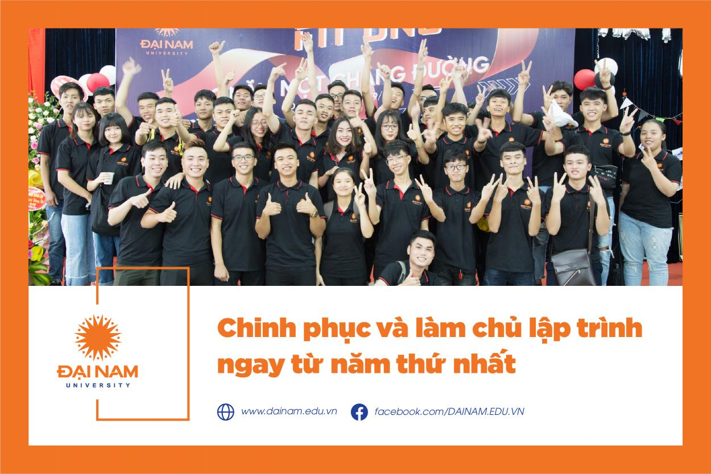
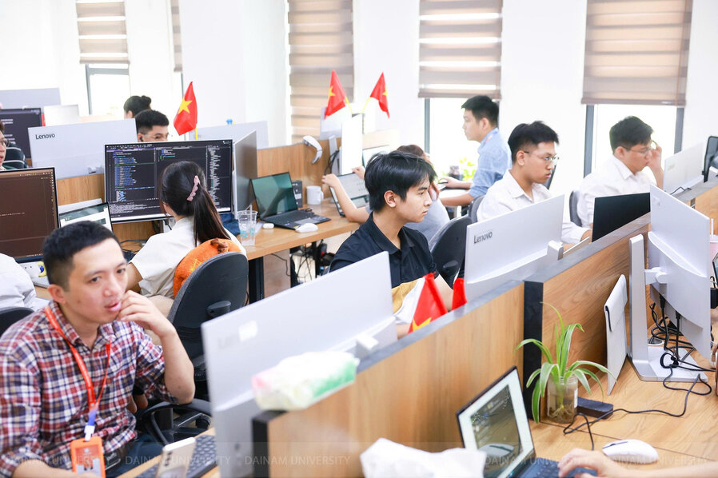

Đại học Đại Nam đưa lớp học đảo ngược vào đào tạo CNTT - kết hợp AI và doanh nghiệp
Với phương châm “Kiến thức đến từ lớp học – Kinh nghiệm đến từ doanh nghiệp – Giá trị đến từ sự kết hợp”, Đại học Đại Nam kiên trì theo đuổi con đường đổi mới: tăng cường ứng dụng công nghệ, gắn đào tạo với thực tiễn và đồng hành cùng sinh viên trên hành trình học tập – khởi nghiệp – lập nghiệp

Cuộc thi lập trình sinh viên 2025
Cuộc thi lập trình thường niên của khoa đã diễn ra thành công với sự tham gia của hơn 100 sinh viên, đem lại nhiều trải nghiệm bổ ích.
Sinh viên CNTT Đại học Đại Nam: Học trong nghề - làm từ ghế giảng đường
Nhằm nâng cao kỹ năng thực hành và kết nối sinh viên với doanh nghiệp, khoa CNTT đã triển khai chương trình "Học trong nghề - làm từ ghế giảng đường" từ năm 2024.
